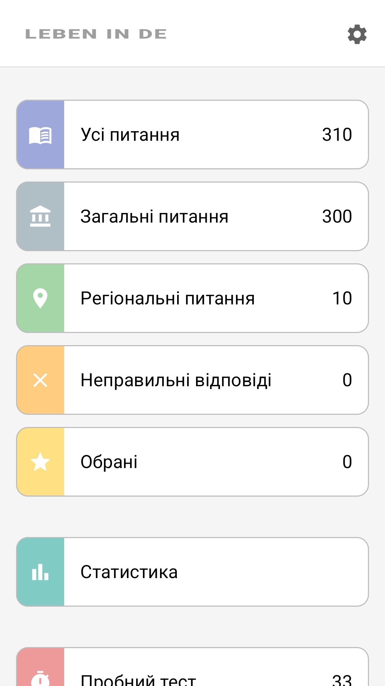
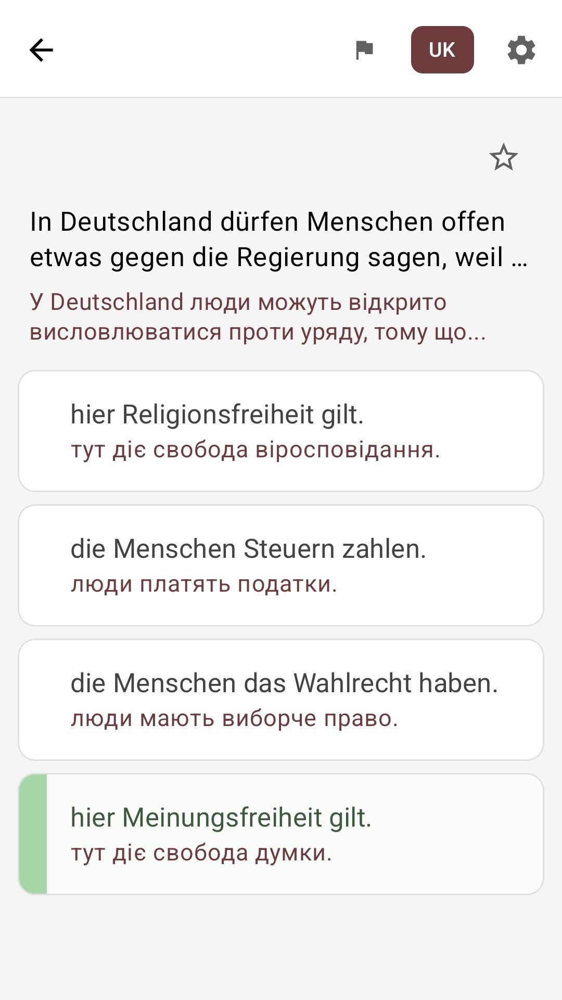
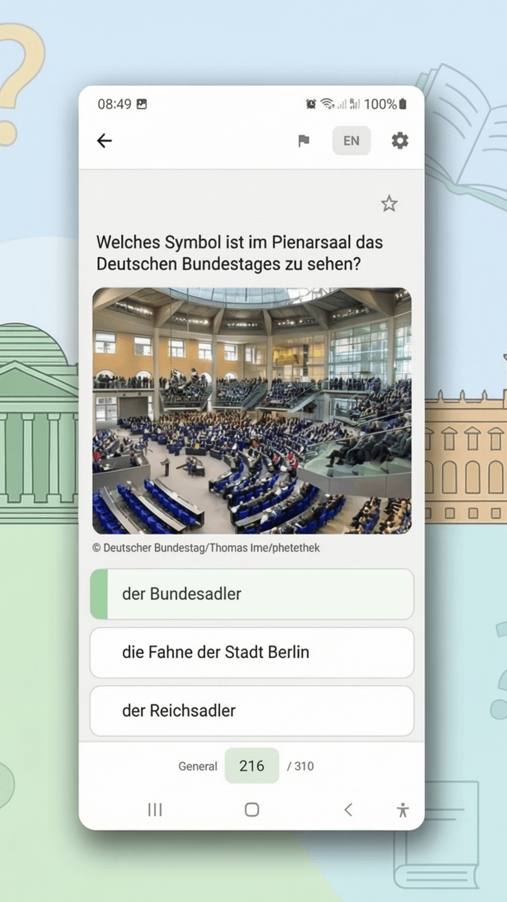
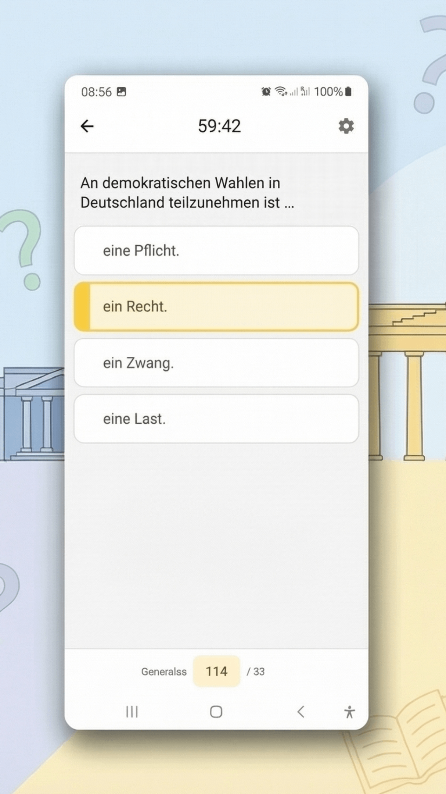

Усі 310 питань
300 загальних питань плюс 10 питань твоєї федеральної землі — повний офіційний каталог.
Leben in Deutschland · Einbürgerungstest
Усі 310 офіційних питань тесту «Leben in Deutschland» з перекладом українською. Вчися легко, у своєму темпі та без інтернету.
Безкоштовно · Працює офлайн · Питання для всіх 16 федеральних земель

Кожне питання показується німецькою — як на справжньому іспиті, а під ним переклад українською. Так ти вчиш одразу і матеріал, і формулювання, які трапляться на тесті.
Загалом у застосунку переклади більш ніж 100 мовами — але головне, що твоя мова вже там.
In Deutschland dürfen Menschen offen etwas gegen die Regierung sagen, weil …
У Німеччині людям дозволено відкрито критикувати уряд, тому що …
hier Meinungsfreiheit gilt.
тут діє свобода слова.
die Menschen Steuern zahlen.
люди сплачують податки.
Питання 1 із 310 · переклад можна сховати одним дотиком
Ті самі картки, що й у застосунку: прості, наочні, без зайвого.
300 загальних питань плюс 10 питань твоєї федеральної землі — повний офіційний каталог.
Пробний тест: 33 питання та 60 хвилин — ті самі правила, що й на офіційному іспиті.
Після кожної відповіді одразу видно, правильна вона чи ні — вчишся на ходу.
Окремий режим із питаннями, на які ти відповів неправильно, — закривай прогалини цілеспрямовано.
Позначай складні питання зірочкою та повертайся до них, коли зручно.
Вчися в метро, у черзі, будь-де — інтернет узагалі не потрібен.
Інтерфейс — українською. Спокійний світлий дизайн, нічого зайвого.



Від встановлення до готовності до іспиту.
Установи безкоштовно, вибери українську мову та свою федеральну землю.
Читай питання з перекладом, позначай складні та повторюй свої помилки.
Перевір себе в режимі іспиту — та йди на справжній тест спокійно.
Безкоштовно. Українською. Працює офлайн.
Це приватний освітній проєкт, а не офіційний застосунок Федерального відомства у справах міграції та біженців (BAMF). Застосунок не пов'язаний із жодними державними органами та не представляє жодних офіційних установ.
Питання тесту базуються на офіційному каталозі питань BAMF. Оригінальний зміст опубліковано німецькою мовою в онлайн-тестцентрі BAMF.
Переклади створено за допомогою ШІ, щоб допомогти користувачам з обмеженим знанням німецької мови, і вони можуть містити неточності. Якщо ви вважаєте, що переклад варто покращити, про це можна повідомити розробника прямо із застосунку. Юридично значущим є лише німецький оригінал питань.
Вміст застосунку призначений виключно для підготовки до іспиту. Попри ретельну підготовку, ми не гарантуємо точність, повноту та актуальність інформації; будь-яка відповідальність за прямі чи непрямі збитки від використання застосунку виключається. Авторитетними є лише офіційні матеріали BAMF.